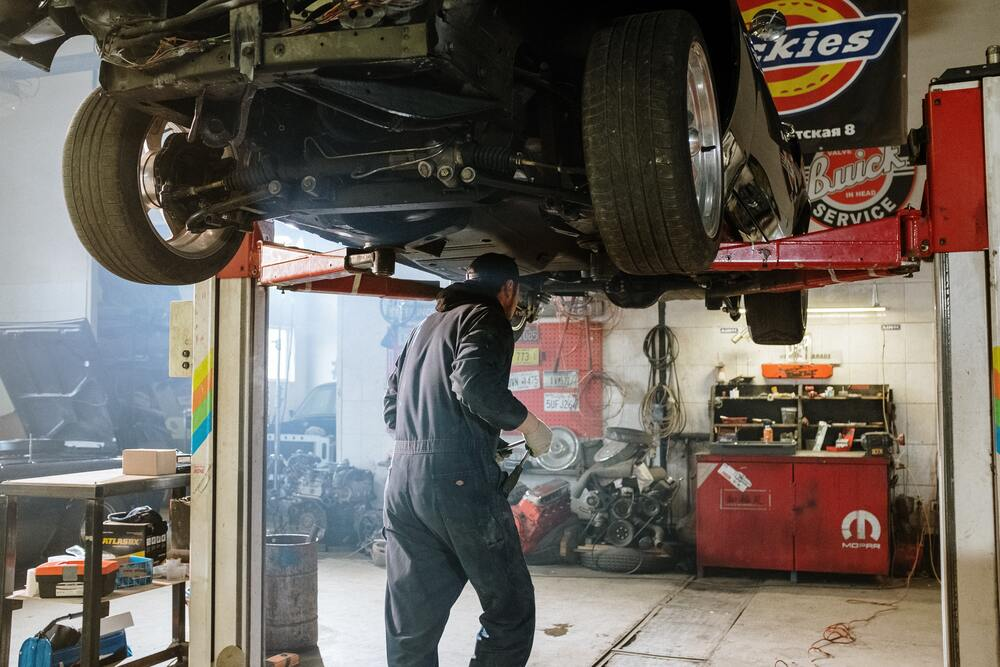

Bengkel Saturnus
Service Besar
Adapun beberapa komponen yang biasanya akan diperiksa atau diganti jika kondisinya sudah tak layak, meliputi:
- Oli mesin, transmisi, hingga gardan diganti dengan yang baru.
- Filter oli turut diganti pula.
- Pembersihan pada filter udara.
- Pemeriksaan baut-baut pada kaki-kaki mobil.
- Pengecekan busi dan kabel pada busi.
- Pembersihan pada intake manifold.
- Penyetelan klep pada mobil yang klep-nya masih manual.
- Pemeriksaan kondisi rem mobil.
- Pengecekan kopling.
- Pemeriksaan bagian radiator.
- Pemeriksaan sistem kelistrikan pada mobil.
- Melihat kondisi sistem bahan bakar.
